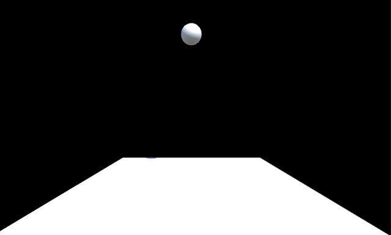

では最初のスプリントを開始しましょう。
まずプロダクトバックログから今回のスプリントで行うアイテム(タスク)を選択して Doing に移します。
まずは背景を表示しいので、以下の様にプロダクトバックログを更新しました。
| ToDo | Doing | Done |
|---|---|---|
| 背景を表示する | ||
| TARO を表示する | ||
| TARO を動かす | ||
| HANAKO を表示する | ||
| HANAKO を動かす | ||
| APPLE を表示する | ||
| APPLE を動かす | ||
| ORANGE を表示する | ||
| 当たり判定をする | ||
| ゲームクリア処理をする | ||
| ゲームオーバー処理をする |
次に詳細仕様書を作成します。
このスプリントでは背景をカメラを使って表示するので、それらのゲームオブジェクトの設計を兼ねて行います。
今回は次の様に詳細仕様書を作りました。
| ゲームオブジェクト名 | 詳細仕様 |
|---|---|
| MyWorld |
・背景オブジェクト
・全体仕様書に貼った画像を使う (800x450 ピクセル) |
| Main Camera |
・デフォルトのカメラオブジェクト
・Projection のタイプは Orthographic ・表示領域のサイズは MyWorld と合わせる(800x450 ピクセル) |
次に詳細仕様書から具体的な作業(タスク)をリストアップしてスプリントバックログを作ります。
今回は以下のようなスプリントバックログを作りました。※ DoingとDoneの列は省略
| ToDo |
|---|
| 新規プロジェクトを作成する |
| MyWorld を表示する |
| カメラの調整をする |
スプリントバックログの内容に沿って、以下の様にコーディングします。
Unity エディタ を起動します。
新規プロジェクトを作成します。モードは「2Dモード」、ブロジェクト名は「UNITY-BASIC3」として下さい。
背景用画像を「MyWorld」に名前変更して下さい(※ 拡張子は変更しないよう注意)。
画像をアセットに登録し、更にゲームオブジェクト化して下さい。
カメラを調整して下さい。表示領域のサイズは 800x450 とします。サイズ設定メニューで + ボタンを押し、ラベルを「MyWorld」、Width と Height をそれぞれ 800, 450 として下さい。
この時点での開発画面は以下の様になっています(クリックで画像のみ表示)

コーディングが終わったらテストします。
実行ボタンを押して動作確認して下さい。
上手く動作しなかった場合は動作を止めてデバッグして下さい。
本来はその後スプリントレビュー、レトロスペクティブ、リリース作業があるのですが、今回は省略して次のスプリントに移ります。
なお、この時点でのプロダクトバックログの状態は次の通りです。
| ToDo | Doing | Done |
|---|---|---|
| 背景を表示する | ||
| TARO を表示する | ||
| TARO を動かす | ||
| HANAKO を表示する | ||
| HANAKO を動かす | ||
| APPLE を表示する | ||
| APPLE を動かす | ||
| ORANGE を表示する | ||
| 当たり判定をする | ||
| ゲームクリア処理をする | ||
| ゲームオーバー処理をする |